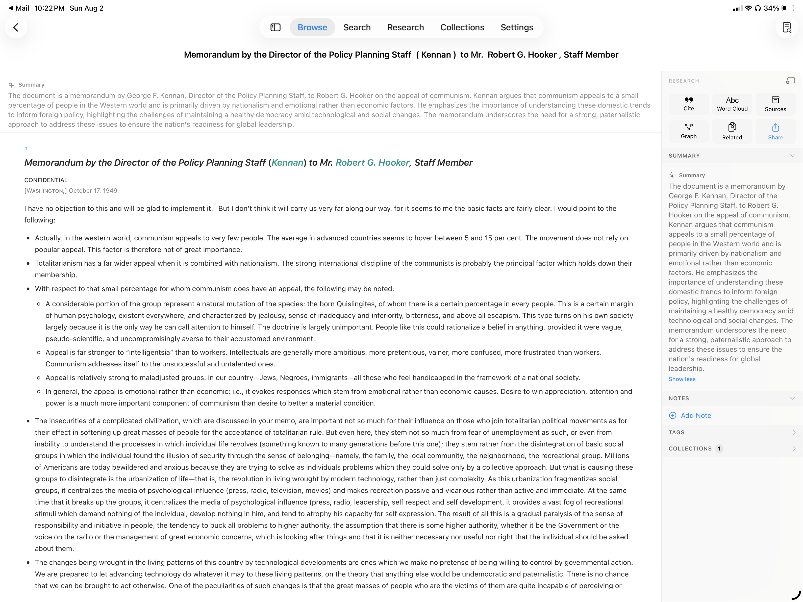
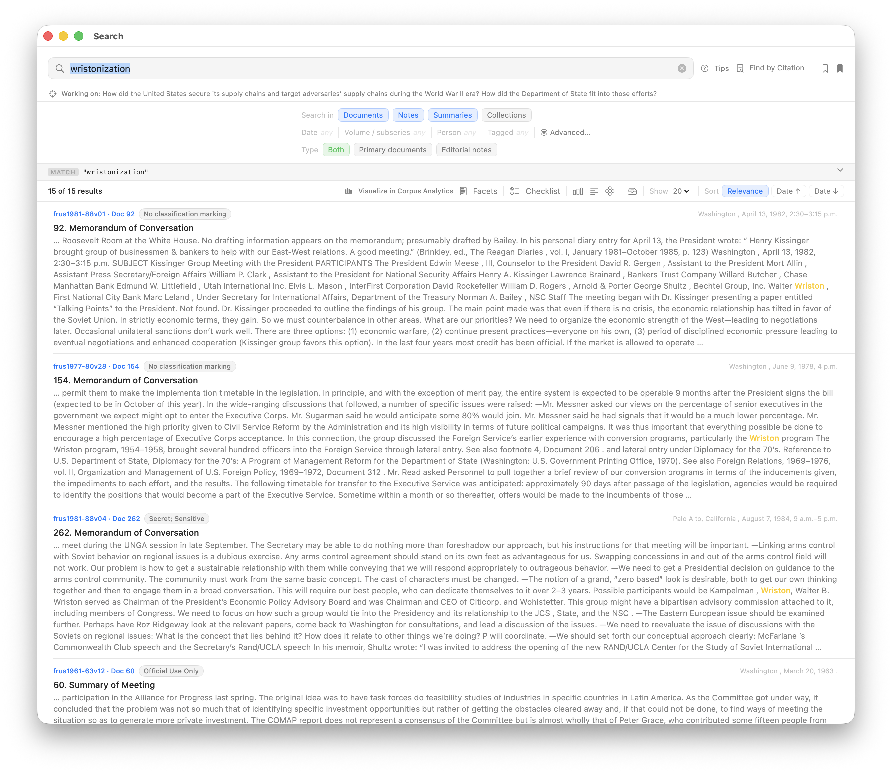
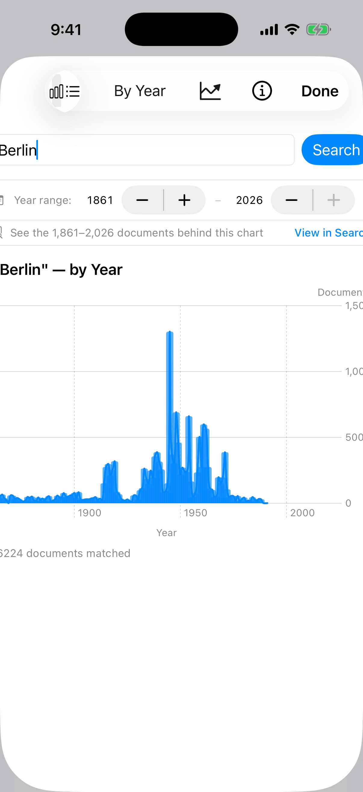
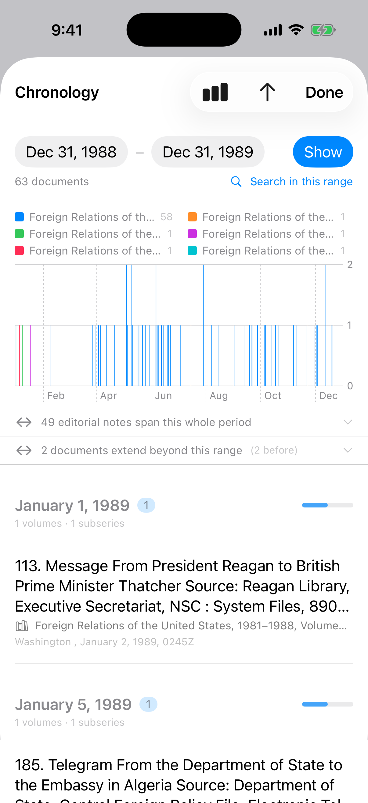

FRUS Explorer — Cross-Platform UI Adversarial Review
FRUS Explorer · joshbotts/FRUS-Explorer @ v2 · consolidated handover
Cross-Platform UI — Adversarial Review
macOS · iPadOS · iOS, consolidated into one handover package
Date 2026-08-14Version 1.0Status consolidated handover + master worklistTwinCross-Platform-UI-Adversarial-Review.md
2 critical19 high30 medium18 low69 findings across 3 platforms · 12 consolidated work items
What this package is. One handover consolidating the three platform reviews of 2026-08-13 and their Semantic Analytics addenda of 2026-08-14. Shared defects are filed once here (§2), platform-defining findings are digested per platform (§3), the new Semantic Analytics surface gets a consolidated verdict (§4), reuse opportunities appear once (§5), and the master worklist (§6) sequences everything across platforms. The per-platform handoffs remain the citation-grade source — every finding there cites file:line — and stay authoritative for detail:
iPhone review — 17 findings (P-1…P-17) + the phone fit table, recommendations PR-1…PR-13
§1 · The three verdicts, side by side
macOS is the serious platform and mostly earns it — exemplary menus, honest counting, native inspectors — but carries professional-app debts under sustained use: a 23-scene window model whose singletons cross-wire, hand-rolled fixed-point chrome in the most-used window, a reader with no measure, and deleted printing on reserved shortcuts.
The iPad app is an iPhone app given the whole screen. Width is spent, not used; the keyboard/trackpad iPad named in the code does not exist in the code (zero commands, no find-in-document, no drag and drop); analysis is modal on the platform's biggest canvas.
The iPhone's core loop is genuinely good — reading, triage, capture — and its honest identity is a companion with one good chart. The failures concentrate where desktop-grade analysis was ported to 390 pt without asking whether it survives: a flagship analytics sheet that clips its own chrome, and three surfaces whose own code admits they do not fit.
What is working everywhere: the multi-window plumbing (scene-addressed hand-offs, per-window state), boot honesty, count honesty, the Dynamic Type program on iOS-primary surfaces, and — in the new Semantic Analytics surface — the app's most disciplined caveat posture yet.
§2 · Shared defects — file once, fix everywhere
Eight defect families reproduce on two or three platforms. Each is one tracker issue; the per-platform IDs are the evidence trail.
X-1CRITICALThe reader has no maximum measureMac M-7 · iPad F-1
One shared CSS rule caps nothing: ~190-character lines on a 13″ iPad in landscape, ~150 at the Mac's default window and ~300 maximized, against a 45–75-character norm. The iPhone is correct by accident of width — the app's only good reading typography. The fix is one line (max-width ~70ch + centered margins in HTMLTemplate.documentCSS) and serves both platforms. The single highest-value/lowest-cost change in all three reviews. (CW-1.)
X-2HIGHResult headers double-number themselves and leak archival source notes into titlesMac M-6 · iPad F-21 · iPhone P-5
Rows read “251. 251. Memorandum From…” because the indexed header already begins with its number, and titles run on into “…Source: Johnson Library, National Security File…” — the same header-extraction defect on all three platforms, worst on a 390-pt row where the repeated number spends half the title cap (Fig 4). One indexing fix + a per-row prefix-suppression guard per platform; it also pollutes citations and document titles, so it earns its own issue. Rider: the uninflected “1 volumes” count string appears on two surfaces (iPad F-23, iPhone P-11; Fig 7 ③). (CW-2.)
The entire .commands block — Document, Find, Collection, Analytics, Research menus, every reading shortcut — is macOS-gated. A Magic Keyboard iPad researcher cannot search, page, highlight, annotate, or find-in-page from the keyboard; the FocusedValue routing is already platform-neutral, so the gate is the only thing in the way. One lift serves both iOS platforms. (CW-5.)
The Mac reading window's principal toolbar item is frus1946v06/d475 (Fig 2 ②), and the new semantic selection card leads with frus1969v12 · d45 on all three platforms — then mints that string as the opened document's header. The volume's title is one manifest lookup away; the honest ceiling is “volume title · Doc id”, and no surface reaches it. (CW-3.)
X-5MEDIUMThe semantic slice is an unlabelled chart, and undated volumes plot silently at mid-axisMac M-18 · iPad F-26 · iPhone P-15
The axis slice draws x = projection, y = volume coverage year with no ticks, no pole names at the plane's edges, no statement of which end is early — the semantics ride in a two-line caption. And any volume without a parseable coverage year is plotted at the exact vertical centre, an unknown date drawn as a mid-century date, on the one surface built to say what is and is not a measurement. (CW-3.)
X-6MEDIUMThe semantic map has no exit: no figure, no CSV, no HandoffMac M-20 · iPad F-28 · iPhone P-17
Manual §13.9 promises every analytics chart a figure (PNG/PDF) or its data (CSV); the newest analytics surface offers neither, on any platform, and publishes no userActivity — an analysis started on the phone or iPad cannot continue on the Mac. The lasso → working corpus is the only door and it feeds Search, not paper. (CW-7.)
X-7MEDIUMAnalysis is modal where it should be residentiPad F-11/F-12/F-25 · (contrast: Mac windows)
All six analytics surfaces open as sheets over Browse on iPad — the newest one adopted the pattern the review had already indicted, and pushes the full document reader inside its own sheet. macOS gives every one of these a window; the Mac manual sells exactly the workflow iPad cannot have (“leave the map beside a document”). The iOS aux-scene table still has no analytics WindowGroup; Semantic Analytics is the strongest pilot for the first one. (CW-8.)
The committed iPad screenshots advertise a split-view Browse that no longer ships; the Mac manual is illustrated with strip-era chrome its own ledger half-flags; and the new Semantic Analytics section ships [SCREENSHOT:] placeholders on both platforms — no capture of the app's newest window exists anywhere. One re-capture sweep, plus a ledger rule: chrome retired ⇒ shot is stale. (CW-10.)

1
2
2
Fig 1 — iPad landscape reader (repo's ipad/document.png). ① X-1 ~190-character lines, no maximum measure. ② iPad F-15: the identical AI summary rendered twice at once — strip and rail — pushing the document below the fold.
1
2
3
Fig 2 — macOS reading window (repo's macos/document.png). ① X-1 ~200-character lines at this width. ② X-4 raw frus1946v06/d475 as the principal toolbar item. ③ Mac M-11: “Sync Error,” a passive label whose only detail is a tooltip.
1
2
3
Fig 3 — iPad search results (repo's ipad/search-results.png). ① X-2 “251. 251.” double numbering. ② X-2 the archival source note fused into the title. ③ iPad F-2: a phone list stretched across the full width.
1
2
Fig 4 — the same defect at 390 pt (repo's ios/search-results.png). ① X-2 “134. 134.” spends the first title line. ② X-2 “…Source: Carter Library, National S…” inside the truncation budget.
§3 · Platform-defining findings
What is unique to each platform, digested. IDs link the detailed handoffs.
macOS — professional-app debts under sustained use
The window model taxes the researcher (M-1…M-3, M-22): 24 scenes; the per-document tools (Source Explorer, graph, word cloud) are singletons that cross-wire with two documents open; one Search window means result sets cannot be compared side by side; 11 of 56 open-window sites failed to front until the 2026-08 audit.
The most-used window has the least-native chrome (M-4, M-5, M-10): no toolbar, ten hover-explained 9–13 pt icon toggles, a scope chip wired to nothing, and 262 deferred fixed-point text sites that ignore macOS text scaling (Fig 5).
Paper is unreachable (M-14): Print is deleted outright, ⌘P is Project Home and ⌘S is Search — reserved shortcuts repurposed in a documents app for a paper discipline.
The new map is gesture-only (M-17): pinch is the sole zoom input — a mouse user cannot zoom 314,483 points, and the exemplary menu system contributes nothing but the item that opens the window.
Quiet failures (M-9, M-11): Read mode has no visible page-turn; “Sync Error” is orange text whose only detail is a hover.

1
2
3
4
Fig 5 — the macOS Search window (repo's macos/search.png). ① M-4 the icon-only readings/actions cluster, hover-explained. ② X-2 “Doc 92” chip over a header that starts “92.” ③ M-10 the “Collections” scope chip — wired to nothing per its own tooltip. ④ M-4 hand-rolled sort chips in place of a native picker.
iPadOS — the research machine that is not in the code
Width is spent, not used (F-2, F-3, F-5): every tab root is a phone list stretched to full width (Fig 3 ③); the tab sidebar is five rows over ~900 pt of dead column; the two-pane layouts the codebase already knows how to build (Collections editor, Research rail) were never applied to Browse, Search, or Research.
The input grammar is missing (F-7…F-10): no find-in-document by any input, zero drag and drop app-wide, no pointer affordances, tooltip-only explanations on a platform that never shows them. With X-3, the “keyboard/trackpad iPad” the code names does not exist.
Modality (X-7; F-12…F-14): facets are a transient sheet over the results they filter; the Search→Analytics hand-off teleports across tabs; the Research Guide is five levels deep in Settings.
Context losses (F-17…F-19): the breadcrumb is suppressed at regular width over a five-level hierarchy; “Open in New Window” can silently no-op; a restored window can dead-end in a permanent spinner.
The reader dup (F-15, F-16, F-22): the same AI summary twice before the document (Fig 1 ②), a stuttered title, and a reading surface exempt from Dynamic Type.
iOS — honest about what fits in a pocket
The flagship analytics sheet clips its own chrome (P-1): query field, title, link, axis labels, and footer all cut at the edges — in the committed screenshot the manual ships (Fig 6).
Three surfaces do not survive 390 pt by their own code's admission (P-2, P-3, P-8): the opacity-only heat matrix (tooltips never render on iOS), a concordance whose context columns hold two words, dashboards that delete their own nav title to fit.
The chronology chart says nothing a phone reader can use (P-4): hairline strokes under a legend of six identically-truncated titles (Fig 7).
The semantic map's compact debts (P-13, P-14): three action cards stack until they bury the canvas; header + controls squeeze the map to roughly half the sheet.
The fit split stands (§4 of the iPhone review): the phone owns reading, triage, and capture; it carries facets, timelines, single charts, and now the semantic map's overview + lasso; it should stop pretending to carry the matrix, the concordance, the graph canvases, and the multi-chart dashboards — reduced compact forms + visible redirects.

1
2
3
4
Fig 6 — Corpus Analytics on iPhone (repo's ios/analytics.png, the manual's illustration). P-1: ① query field clipped to the sheet edge, ② “View in Searc[h]” cut mid-word, ③ y-axis labels cut, ④ matched-count footer clipped.

1
2
3
Fig 7 — Chronology on iPhone (repo's ios/chronology.png). P-4: ① a year of documents as 1–2 px hairline strokes, ② six legend entries all reading “Foreign Relations of the…”. ③ X-2 rider: “1 volumes · 1 subseries.”
No committed capture of Semantic Analytics exists on any platform — the manuals ship [SCREENSHOT:] placeholders for §13.8 (X-8 rider). Figures above are the repo's committed screenshots, annotated.
§4 · Semantic Analytics — the consolidated verdict on the new surface
Credit first: it ships the app's most disciplined honesty posture yet. The experimental header collapses to its warning instead of disappearing; the layout caveat (“distances between far regions are not meaningful”) is permanent; scope lines carry denominators (“whole volumes, 12 of 552”); lasso capture states device coverage via the same resolver Search uses and truncates honestly; the provenance lens ships an evidence floor, a plurality caption, and a deliberately dimmed weakest category; an unsupported lens is withheld, not drawn empty; the six controls that once drew-and-did-nothing are documented in-file with their guards. The macOS window-not-sheet Metal lesson is measured and recorded; the compact lessons (wrapping legend, menu lens picker, reachable toolbar toggle) were applied on day one.
Where it falls short, consolidated: the slice has no scale and plots undated volumes mid-axis (X-5); the selection card leads with raw IDs (X-4); nothing can leave the surface (X-6); region names are inert while the artifact's own per-region era data goes unread (M-21/F-29); Mac zoom is pinch-only (M-17); on iPad it is the sixth modal sheet and buries the reader inside itself (X-7/F-25); on iPhone the action cards stack over the canvas and the chrome squeezes the map to half the sheet (P-13/P-14); VoiceOver gets a named rectangle on every platform (M-22/F-30).
§5 · Foundations worth reusing — the semantic substrate × the visualization family
Six opportunities, each grounded in shipped code; the design doc's own ranking is Vector-Embeddings-Semantic-Design.md §7. Identical across the three handoffs; filed once here.
O-1 · Result sets and corpora on the map. The scope mask is one byte per row but is only built from volume sets today; a document-key mask is the same array. “Show on semantic map” from Search/corpora is the missing half of a loop the lasso already walks the other way — where does my result set sit in the corpus's language?
O-2 · A two-way bridge with Related Documents. The similarity axis ships on this substrate (weight 0, experimental); the retrieval kernel's corpus scan is 1.43 ms. Selection card → “Similar documents” (works with zero volumes downloaded); Related rows → “Show on map.” SemanticSharedTerms already computes the evidence chips.
O-3 · Region-share-over-time in Corpus Analytics. The bundled artifact carries per-region eraCounts that nothing draws; region × era stacked areas is the design doc's own §7.3 and Swift Charts is already in the family. Highest value-per-effort: the data ships today.
O-4 · Pre-1900 rescue for Related Documents and the graph. 46,234 documents have an empty Related list, 98.2% pre-1900 — where citations and archival keys do not reach. Semantic neighbours as an explicitly-labelled experimental section lights the corpus's darkest region; the feedback loop already weights 19th-century verdicts highest.
O-5 · The Metal point renderer as a house substrate for large-N figures. On-demand drawing, per-row flags, a pure-function camera, measured picking — what the force-directed graph canvases lack, and the iPhone's hairline chronology (Fig 7) is a density scatter it draws for free.
O-6 · Subseries poles. 659 exact centroids ship (volumes and subseries); only tapped-document volume poles are offered. A subseries pole picker is data-ready; free-text poles stay correctly deferred.
§6 · Master worklist and sequencing
Twelve consolidated items. Effort tags follow the repo convention (S/M/L); per-platform worklist rows (Mac W-*, iPad W-*, iPhone W-*) map into these. Wave 1 is deliberately all-S: one polish session per platform.
Sequencing. Wave 1 (CW-1…CW-5) is one all-S polish session per platform — CW-1 alone transforms the core surface on two platforms. Wave 2 (CW-6…CW-8) is the input session and the honest-compact session. Wave 3 (CW-9…CW-11) is the structural work: windows, chrome, width, docs. CW-12 runs as scheduled programs and recurring gates. Opportunities O-1…O-3 slot after wave 1: two are mask/chart work over data that already ships.
Markdown twin for tracker/Claude Code: Cross-Platform-UI-Adversarial-Review.md · Sources: the three per-platform handoffs (2026-08-13, addenda 2026-08-14), each citing file:line at branch v2 · Figures: assets/*.png, the repo's committed screenshots, annotated.